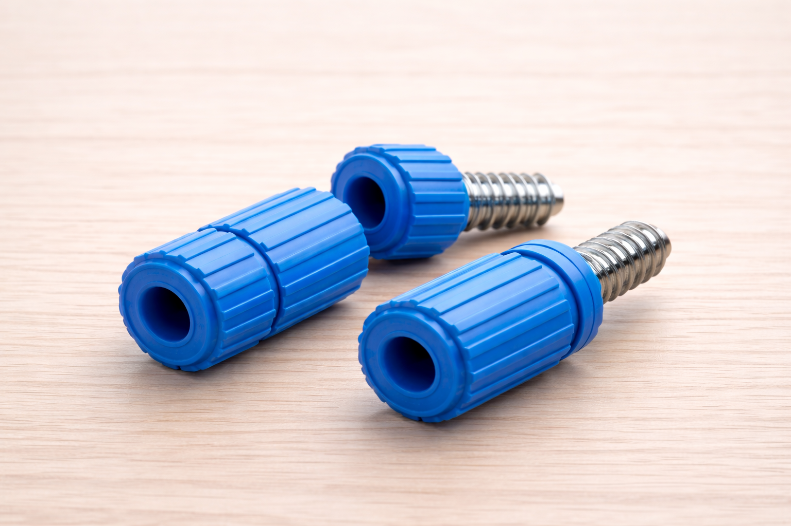

Blue Widgets
This page contains general information about blue widgets. It describes what they are, why people buy them, and what to consider when choosing one.
Overview
Blue widgets are a common category of widgets used in everyday projects. They come in different sizes, finishes, and durability ratings. Most buyers care about reliability, compatibility, and availability.
Example

For more information, compare specifications and consider how the widget will be used in practice.